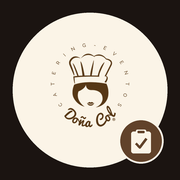

Instalar las apps
Repartos para los repartidores y Checklist para los montadores. Se instalan en el móvil con su icono, a pantalla completa, y funcionan sin cobertura con lo último que cargaron.
Repartos
Ruta del día, firma y foto de la entrega
- Abre esta página en Safari (no desde WhatsApp ni Chrome) y toca Abrir Repartos.
- Toca Compartir y luego Añadir a pantalla de inicio.
- Abre Repartos desde su icono. La primera vez sale «Pedidos bloqueados».
- En WhatsApp, mantén pulsado el enlace completo que te pasó la oficina y toca Copiar. Vuelve a la app y toca Pegar enlace. Listo para siempre.

Checklist
Lo que hay que cargar, retorno y fotos del montaje
- En Safari, toca Abrir Checklist.
- Compartir → Añadir a pantalla de inicio.
- Abre Checklist desde su icono y, en «Eventos bloqueados», toca Pegar enlace con el enlace de la oficina copiado.
En iPhone cada app instalada guarda su propio desbloqueo: hay que pegar el enlace una vez en cada app, aunque ya lo hayas abierto en Safari.
Repartos
App para Android (APK)
- Descarga la app y ábrela. Si avisa de «origen desconocido», toca Ajustes → Permitir de esta fuente.
- Toca Instalar y ábrela. En el aviso, toca Pegar enlace con el enlace de la oficina copiado.
Checklist
Se instala desde Chrome
- En Chrome, toca Abrir Checklist.
- Menú ⋮ → Añadir a pantalla de inicio (o Instalar app).
- Ábrela y, en «Eventos bloqueados», toca Pegar enlace.